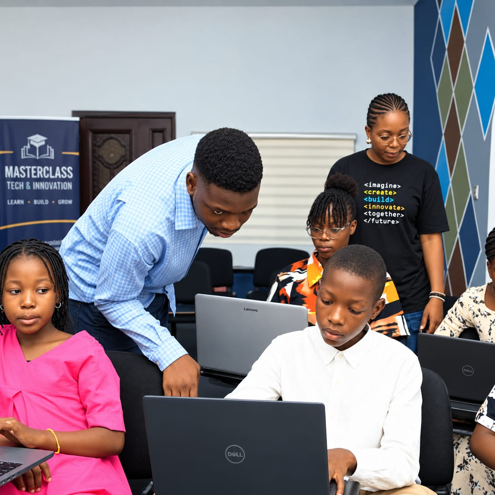

Stage 01
Early Years & Primary
Early Years Foundation Stage (EYFS) and primary curriculum emphasizing phonics, reading fluency, Singapore-style mental math, basic science, and positive moral habits.
Academic Excellence
Discover an academic culture that blends broad curriculum depth, modern science and computing laboratories, practical agriculture, and dedicated examination preparation.
Academic Overview
At George & Duke Institutions, academic rigor is not simply about rote learning; it is about cultivating inquiring minds, sound study habits, and independent problem-solving skills.
We maintain high academic expectations supported by small class sizes, structured tutorials, and continuous diagnostic assessment. Our students are challenged to think critically, communicate articulately, and apply theoretical principles through practical laboratory and field work.
From our early childhood classes in Felele to our secondary college and pre-university A-Level programmes in Odo-Ona, we foster an environment where every student is mentored to achieve their personal best.
Curriculum Structure
A seamless blend of the British National Curriculum and the Nigerian National Curriculum designed to prepare students for local and global university entry.
Stage 01
Early Years Foundation Stage (EYFS) and primary curriculum emphasizing phonics, reading fluency, Singapore-style mental math, basic science, and positive moral habits.
Stage 02
Broad exploratory curriculum across pure sciences, introductory technology, social studies, languages, and vocational arts, culminating in the Basic Education Certificate Examination (BECE).
Stage 03
Focused academic streaming into Science, Commercial, or Humanities. Rigorous preparation for WASSCE (WAEC) and SSCE (NECO), supported by Cambridge IGCSE options.
Stage 04
Intensive Cambridge International A-Levels, JUPEB, and IJMB courses providing specialized university-level subject preparation for direct entry into 200-level undergraduate degrees.
Academic Departments
Specialized faculty departments providing depth of knowledge and practical application.
Comprehensive instruction in Physics, Chemistry, Biology, Mathematics, Further Mathematics, and Computer Studies. Students conduct regular practical work in fully equipped laboratories and modern ICT suites.
Hands-on agricultural education on our dedicated school farmland. Students learn modern agronomy, crop production, soil science, poultry management, and food processing through real-world experience.
Economics, Financial Accounting, Commerce, and Business Studies designed to build financial literacy, analytical business reasoning, and entrepreneurial thinking.
Literature-in-English, Government, History, Christian and Islamic Religious Studies, Civic Education, and Creative Arts that nurture critical analysis and cultural awareness.
English Language, Phonetics, French Language, and Nigerian Indigenous Languages (Yoruba) focusing on oral articulation, composition, and multilingual appreciation.
Studio art, painting, graphic design, musical theory, choir, instrument training, and drama production that foster creative expression and confidence.

Rigorous Preparation
We view examinations as an opportunity for students to demonstrate their mastery. Our examination strategy begins well before candidates reach final classes, ensuring thorough syllabus completion, deep concept comprehension, and familiarity with grading rubrics.
Proven Track Record
George & Duke Institutions has an established tradition of academic excellence. Our candidates consistently record 100% pass rates in WAEC and NECO examinations, with a high proportion of distinctions in English, Mathematics, Sciences, and Commercial subjects.
Our Cambridge A-Level and Direct Entry alumni have successfully secured admission and scholarships into premier institutions including the University of Ibadan, Obafemi Awolowo University, Covenant University, and renowned universities across the UK, Canada, and the United States.